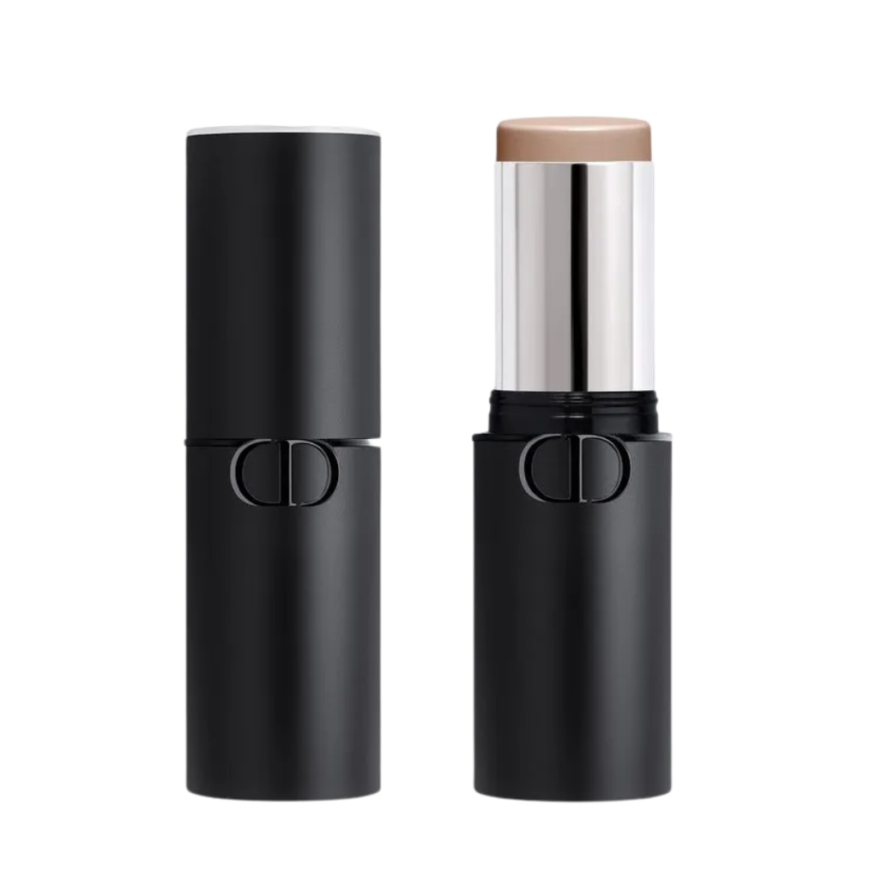
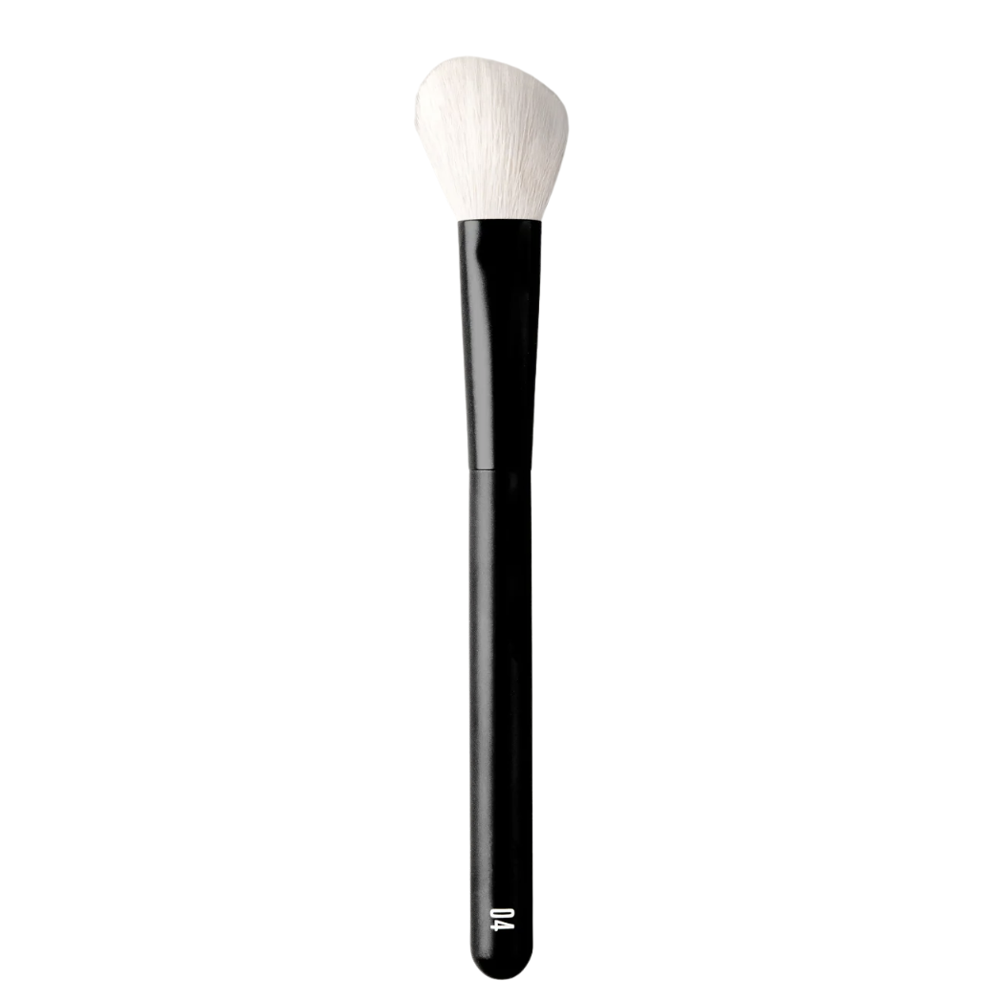
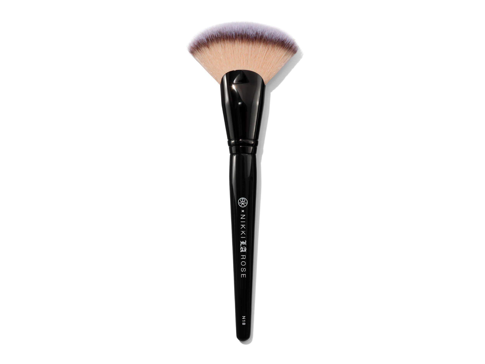
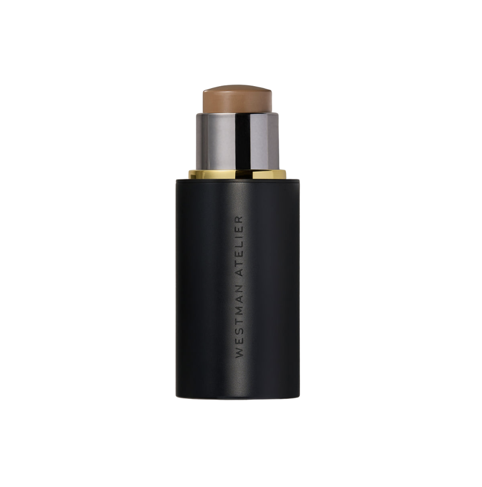
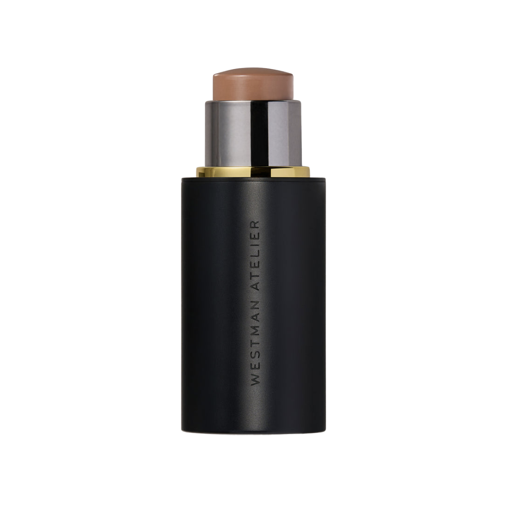

Dior
Forever Skin Contour
01 Light · creme
Tom frio e equilibrado, com nuances levemente acinzentadas.
Pincéis para aplicar

RephrBrush 04
BK BeautyN18Um tom frio e equilibrado para devolver dimensão ao rosto com efeito de sombra natural.

Tom frio e equilibrado, com nuances levemente acinzentadas.

RephrBrush 04
BK BeautyN18

Dois formatos para aplicar e polir o contorno sem marcar.